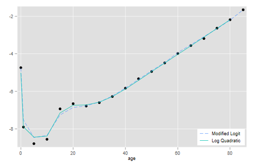

The state-of the art model mortality schedules are the modified logit relational system of Murray et al (2003) and the log-quadratic model of Wilmoth et al (2012). Let’s see how well they do with the life table in Box 3.1 of the textbook, for Austrian males in 1992.
{% include srtabs.html %}I wrote some code to facilitate fitting these models in Stata and R, so the first step will be to read it directly from GitHub:
. clear mata . quietly do https://grodri.github.io/demography/mrlogit.mata . quietly do https://grodri.github.io/demography/logquad.mata
> library(dplyr)
> library(ggplot2)
> source("https://grodri.github.io/demography/mrlogit.R")
> source("https://grodri.github.io/demography/logquad.R")
I have also saved the complete life table in a plain text format as
austria92, so you can easily read it in Stata or R.
. import delimited using https://grodri.github.io/datasets/austria92.dat, ///
> delim(" ", collapse) varn(1) case(preserve) clear
(encoding automatically selected: ISO-8859-1)
(15 vars, 19 obs)
. quietly replace lx = lx/100000 //!
. mata b31 = st_data(., ("age", "a", "q", "m", "lx"))
. mata b31[1::6,]
1 2 3 4 5
┌───────────────────────────────────────────────────────────────────────┐
1 │ 0 .0680000037 .0086719999 .0087430002 1 │
2 │ 1 1.626000047 .001479 .00037 .9913278222 │
3 │ 5 2.5 .000766 .000153 .9898614287 │
4 │ 10 3.142999887 .000963 .000193 .9891029 │
5 │ 15 2.723999977 .0048719998 .000976 .9881504774 │
6 │ 20 2.519999981 .0064050001 .001285 .9833365679 │
└───────────────────────────────────────────────────────────────────────┘
> library(dplyr)
> b31 <- read.table("https://grodri.github.io/datasets/austria92.dat", header=TRUE)
> b31x <- mutate(b31, lx=lx/100000) |> select(age, a, q, m, lx)
> head(b31x)
age a q m lx
1 0 0.068 0.008672 0.008743 1.0000000
2 1 1.626 0.001479 0.000370 0.9913278
3 5 2.500 0.000766 0.000153 0.9898614
4 10 3.143 0.000963 0.000193 0.9891029
5 15 2.724 0.004872 0.000976 0.9881505
6 20 2.520 0.006405 0.001285 0.9833366
You may want to try taking logits of the survival function and plotting it against the Brass standard. The relationship doesn’t look very linear. So let’s try instead the modified transformation, which uses corrections based on survival to ages 5 and 60.
. mata zx = mrlogit_zx(b31[2::19, 5], "male") //transform data
. mata zs = mrlogit_zs("male") // transform standard
. getmata zx, force replace
. getmata zs, force replace
. // scatter zx zs
. quietly regress zx zs // fit by ols
. predict zfit
(option xb assumed; fitted values)
(1 missing value generated)
. mata b = st_matrix("e(b)") // constant last!
. mata lfit = mrlogit_lx(b[2], b[1], "male")
. // might want to plot
> zx <- mrlogit_zx(b31x$lx[-1], "male") # transform data
> zs <- mrlogit_zs("male") # transform standard
> # data.frame(zx, zs) |>
> # ggplot(aes(zs, zx)) + geom_point() + geom_smooth(method="lm")
> b <- coef(lm(zx ~ zs)) # ols fit
> lfit<- mrlogit_lx(b[1], b[2], "male") # convert to survival
> # data.frame(age=b31$age, lx=b31$lx/100000, fit=c(1, lfit)) |>
> # ggplot(aes(age, lx)) + geom_point() + geom_line(aes(age, fit))
Of course the fit is going to look good on the survival scale, but let’s get a closer look by computing mortality rates. I first compute death probabilities and then convert to rates with the same assumptions used to construct the table.
. mata qfit = 1 :- (lfit\0) :/ (1\lfit) // convert to probabilities . mata n = 1\ 4\ J(17, 1, 5) . mata mfit = qfit :/ (n - qfit :* (n - b31[,2])) // and then to rates . getmata mfit, replace . twoway scatter m age, yscale(log) /// // plot > || line mfit age, yscale(log) legend(off) . graph export mrlogits.png, width(500) replace file mrlogits.png saved as PNG format
> qfit <- 1 - c(lfit, 0)/c(1, lfit) # death probabilities
> a <- b31$a # nax
> n <- c(1, 4, rep(5,17)) # width of intervals
> mfit <- qfit/(n - qfit*(n - a)) # probs to rates
> data.frame(age = b31$agem, mobs = b31$m, mfit) |>
+ ggplot(aes(age, log(mobs))) + geom_point() +
+ geom_line(aes(age,log(mfit)))
> ggsave("mrlogit.png", width=500/72, height=400/72, dpi=72)
The model gets infant mortality right and does an excellent job at age 30 and above, but has a bit of trouble in the 5 to 25 range.
Because this model is non-linear on the parameters we need to use an
optimization routine, R’s optim() or Stata’s
optimize(). In both cases we write a simple “residual sum
of squares” function. Our function is “hardwired” to use
b31 and the male model. Note that the data go up to age 85+
but the model continues to 110+. For simplicity I will only use ages 0
to 85 and skip the open-ended group. I use as starting values log (1q0) and
zero.
. mata:
───────────────────────────────────────────────── mata (type end to exit) ──────────────────────────────
: obs = log(b31[1::18, 4])
: void rss(todo, b, f, g, H) {
> external obs
> fit = logquad(b[1], b[2], "male")[1::18]
> f = -sum((obs - fit):^2)
> }
note: argument todo unused.
note: argument g unused.
note: argument H unused.
: S = optimize_init()
: optimize_init_evaluator(S, &rss())
: h = log(1 - b31[3, 5]) // log(5q0)
: optimize_init_params(S, (h, .2))
: optimize(S)
Iteration 0: f(p) = -.42176202
Iteration 1: f(p) = -.28965267
Iteration 2: f(p) = -.28942899
Iteration 3: f(p) = -.28942899
1 2
┌───────────────────────────────┐
1 │ -4.801873991 .3079241028 │
└───────────────────────────────┘
: end
────────────────────────────────────────────────────────────────────────────────────────────────────────
> obs <- log(b31$m[-19])
> rss <- function(b) {
+ fit <- logquad(b[1], b[2], "male")$logmx[1:18]
+ sum((obs - fit)^2)
+ }
> b <- c(log(1- b31$lx[3]/100000), 0)
> r <- optim(b, rss)
> r
$par
[1] -4.8019124 0.3079723
$value
[1] 0.289429
$counts
function gradient
55 NA
$convergence
[1] 0
$message
NULL
The optimization procedure has converged. All we need now is to plot the result.
. mata b = optimize_result_params(S) . mata lqfit = logquad(b[1], b[2], "male")[1::18] . getmata lqfit, force replace . gen logm = log(m) . twoway scatter logm age /// > || line lqfit age, legend(off) . graph export logquads.png, width(500) replace file logquads.png saved as PNG format
> fit <- logquad(r$par[1], r$par[2], "male")$logmx[1:18]
> lqfit <- data.frame(age = b31$agem[-19], obs, fit)
> p <- ggplot(lqfit, aes(age, obs)) + geom_point() + geom_line(aes(age, fit))
> ggsave("logquad.png", plot=p, width=500/72, height=400/72, dpi=72)
The fit is pretty good overall but, not unlike the previous model, it seems to have some difficulty at ages 10 to 25.
Here is a graph that overlays the two fits
. gen lmfit = log(mfit) . twoway scatter logm age /// > || line lmfit age , lpat(dash) /// > || line lqfit age , legend(ring(0) pos(5) cols(1) /// > order(2 "Modified Logit" 3 "Log Quadratic")) . graph export mortmods.png, width(500) replace file mortmods.png saved as PNG format

> fits <- mutate(lqfit, fitm = log(mfit[-19]))
> p <- ggplot(fits, aes(age, obs)) + geom_point() +
+ geom_line(aes(age, fit, color="c1")) +
+ geom_line(aes(age, fitm, color="c2")) +
+ scale_color_manual(name="Model", values=c("c1" = "blue", "c2" = "red"),
+ labels=c("Log-quadratic", "Modified logit")) +
+ theme(legend.position =c(.9, .12))
> ggsave("mortmodsr.png", plot=p, width=500/72, height=400/72, dpi=72)
There seems to be some room for improvement, but in my opinion it will be hard to do much better without adding a third parameter.